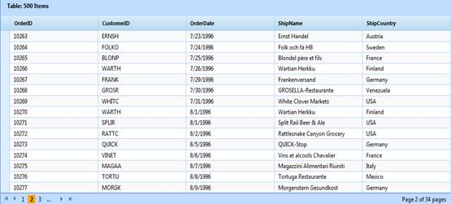

AJAX Grid offers complete navigation support to easily switch between the pages using the pager bar available at the bottom of the AJAX Grid. It facilitates splitting up huge grid data and displays viewable sets of grid rows on each page. By selecting the respective page numbers you can navigate to the other pages. You can also limit the number of pages.
The AJAX Grid exposes the following properties to enable and control the paging feature.
|
Property |
Description |
Type of property |
Value It Accepts |
Dependencies |
|
EnableAjaxPaging
|
Enables the paging feature. |
Boolean |
True False Default value is False |
NA |
|
PageSize |
Sets the number of records to be displayed in a single grid page. The same number of records will be available for the next page and you will be able to navigate between these pages using the pager bar. Default page size is 12.
|
Int |
+ve Integers
|
Dependent on EnableAjaxPaging
|
|
PageIndexButtonCount
|
Sets the number of pages to be displayed in the pager bar. You can limit the number of pages to be displayed using this property. Default page count is 10.
|
Int |
+ve Integers
|
Dependent on EnableAjaxPaging
|
|
CurrentPage |
Set the current page to the Grid control. |
Int |
+ve Integers
|
Dependent on EnableAjaxPaging |
Server Mode
In Server Mode, paging will be
done by enabling the property EnableAjaxPaging and setting the
PageSize, PageIndexButtonCount, and CurrentPage properties as per requirement.
|
[ASPX]
<Syncfusion:GridGroupingControl ID="GridGroupingControl1" runat="server" AjaxAutoformat="Midnight" EnableAjaxMode="true" EnableAjaxPaging="true" PageSize="15" PageIndexButtonCount="3" CurrentPage="3" > </Syncfusion:GridGroupingControl>
|
|
[C#]
this.GridGroupingControl1.EnableAjaxPaging = true; this.GridGroupingControl1.PageSize = 15; this.GridGroupingControl1.PageIndexButtonCount = 3; this.GridGroupingControl1.CurrentPage = 3;
|
|
[VB]
Me.GridGroupingControl1.EnableAjaxPaging = True Me.GridGroupingControl1.PageSize = 15 Me.GridGroupingControl1.PageIndexButtonCount = 3 Me.GridGroupingControl1.CurrentPage = 3 |
The following figure is obtained using the code snippet above.

Figure 131: Paging
JSON Mode
JSON mode uses ASP.NET AJAX 4.0 client templates for
displaying the grid. The paging operation in JSON mode should be handled by the
user. To enable the JSON mode, set the AjaxActionMode property to
JSON. To enable the paging functionality, set the EnableAjaxPaging
property to true. Use the PageSize property to define the number
of records to be displayed in one page, the PageIndexButtonCount property
to define the range of pages displayed on the pager, and the CurrentPage
property to define the current page of the grid. We need to specify the action
for handling the paging action and this can be done using
JsonActionMapper.
|
[ASPX] <Syncfusion:GridGroupingControl ID="GridGroupingControl1" runat="server" AjaxAutoformat="Midnight" EnableAjaxMode="true" EnableAjaxPaging="true" PageSize="15" PageIndexButtonCount="3" CurrentPage="3" AjaxActionMode="Json" JsonActionMapper="JsonPaging" > </Syncfusion:GridGroupingControl>
|
|
[C#]
this.GridGroupingControl1.EnableAjaxPaging = true; this.GridGroupingControl1.PageSize = 15; this.GridGroupingControl1.PageIndexButtonCount = 3; this.GridGroupingControl1.CurrentPage = 3; //Json Action Mapper [WebMethod()] public static IEnumerable JsonPaging(object GridJsonArgs) { //To allow ASP.NET to use SQL Compact Server 3.5 AppDomain.CurrentDomain.SetData("SQLServerCompactEditionUnderWebHosting", true); string ConnectionString = @"Data Source=|DataDirectory|\Northwind.sdf"; Northwind NorthwindDB = new Northwind(ConnectionString); var OrdersData = from prod in NorthwindDB.Products select new { prod.ProductID, prod.ProductName, prod.QuantityPerUnit, prod.UnitPrice, prod.UnitsInStock }; GridJSONAction obj = new GridJSONAction(); IEnumerable data = obj.GridActionResult(GridJsonArgs, OrdersData); return data; }
|
|
[VB] Me.GridGroupingControl1.EnableAjaxPaging = True Me.GridGroupingControl1.PageSize = 15 Me.GridGroupingControl1.PageIndexButtonCount = 3 Me.GridGroupingControl1.CurrentPage = 3 //Json Action Mapper <WebMethod()> _ Public Shared Function JsonPaging(ByVal GridJsonArgs As Object) As IEnumerable 'To allow ASP.NET to use SQL Compact Server 3.5 AppDomain.CurrentDomain.SetData("SQLServerCompactEditionUnderWebHosting", True) Dim ConnectionString As String = "Data Source=|DataDirectory|\Northwind.sdf" Dim NorthwindDB As New Northwind(ConnectionString) Dim ProductsData = From prod In NorthwindDB.Products Select prod.ProductID, prod.ProductName, prod.QuantityPerUnit, prod.UnitPrice, prod.UnitsInStock Dim obj As New GridJSONAction() Dim data As IEnumerable = obj.GridActionResult(GridJsonArgs, ProductsData) Return data End Function |
The following figure is obtained using the code snippet above.
Figure 132: Paging